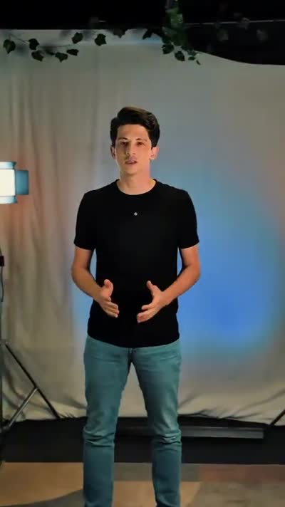
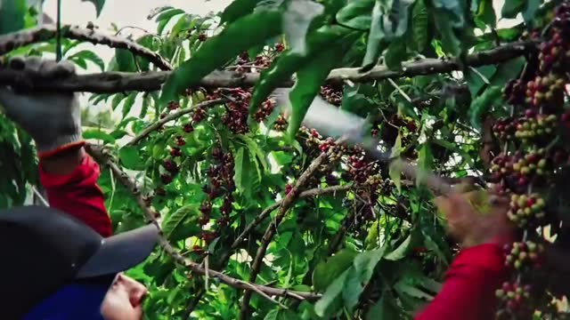

Essencial
Para quem precisa existir bem nas redes, com constância.
- 1 diária de gravação/mês
- 12 peças por mês
- Calendário e legendas
- Gestão de 2 redes
- Relatório simplificado
Valor sob consulta
Quero o EssencialCena 00 Ext. Vilhena – RO — dia
A WK é produtora e agência no mesmo endereço: roteiro, câmera, edição, tráfego e estratégia saindo do mesmo time, aqui em Vilhena. Do agro ao político, do comércio ao consultório.
Sem custo · resposta no mesmo dia útil · seg a sex, 08h–18h



01 Diagnóstico O que costuma estar travando
Quase todo mundo já postou, já impulsionou, já tentou. Marque mentalmente o que acontece na sua empresa:
Vídeo tremido e foto de celular dizem ao cliente que você é pequeno — mesmo faturando alto.
O botão “turbinar” compra curtida. Sem estrutura de campanha, público e criativo, não há venda rastreável.
Quando o mês aperta, não existe alavanca para puxar. Marketing vira despesa de emergência.
Prometeram muito, sumiram no meio do contrato e devolveram um relatório que ninguém entende.
Não porque é melhor: porque é mais visto. Autoridade se constrói com constância e produção que sustenta preço.
Você é dono, vendedor, comprador e RH. O marketing sobra para o fim do dia — e nunca sai do lugar.
Dois ou mais? Então a conversa de 15 minutos já se paga.
Falar com a WK02 Serviços Seis frentes, um time só
Roteiro, captação, edição, mídia e estratégia na mesma casa. Toque em cada linha para abrir o escopo.
Filmes que vendem, não vídeos que só enfeitam. Direção, roteiro, captação em 4K, drone, som direto, cor e finalização — com a mesma equipe do começo ao fim.
Meta Ads e Google Ads estruturados para gerar conversa no WhatsApp, visita na loja e pedido fechado. Com número no fim do mês, não com achismo.
Planejamento mensal e produção recorrente. Sua marca deixa de aparecer “quando dá” e passa a ocupar espaço todo dia, com a mesma linha de discurso.
Marketing feito por quem entende de porteira para dentro: linguagem, calendário de safra e prova social do agro — do dia de campo ao pós-venda de máquina.
Construção de imagem pública com responsabilidade: diagnóstico, posicionamento, narrativa e produção de conteúdo para pré-campanha e comunicação de mandato.
Antes de anunciar é preciso saber quem você é. Posicionamento, identidade e discurso alinhados para justificar o seu preço na hora da negociação.
03 Filmes Produções nossas, som ligado
Três peças recentes: um institucional, um filme de campo para o agro e um dia de set. Toque no play — o vídeo só baixa nessa hora.
Direção, roteiro e captação em estúdio: o filme que apresenta nosso jeito de trabalhar.
Luz, fundo, câmera e direção de apresentador — do vertical ao externo.
Filme de campo para o agronegócio: colheita, processo e a história de quem produz.
Mais material em @wkfilms.ro — 352 publicações
04 Método Ordem de produção
Todo cliente entra pelo mesmo processo. O que muda é o tamanho da operação — e você aprova cada etapa antes da seguinte.
| Etapa | O que acontece | O que você recebe |
|---|---|---|
| DiagnósticoEtapa 01 | Reunião de 30 a 45 minutos sobre produto, margem, ticket, concorrência e o que já foi tentado. Sem enrolação e sem custo. | Raio-x do cenário atual |
| EstratégiaEtapa 02 | Definição de posicionamento, público, oferta, canais e metas. Nenhuma câmera é ligada antes de você aprovar o plano. | Plano de comunicação e mídia |
| Pré-produçãoEtapa 03 | Roteiro, cronograma, locação, elenco e direção de arte. É aqui que o filme é ganho — antes de gravar. | Roteiro e cronograma aprovados |
| ProduçãoEtapa 04 | Captação com equipe completa, edição, finalização e subida das campanhas, com público e verba definidos. | Peças publicadas e campanhas no ar |
| OtimizaçãoEtapa 05 | Acompanhamento dos números, ajuste de criativo e verba. O que funciona escala; o que não funciona sai. | Relatório mensal e reunião |
05 Equipe Ficha técnica

A WK nasceu do audiovisual e cresceu para o marketing completo por um motivo simples: vídeo bonito sem estratégia não paga a conta do cliente, e estratégia sem imagem forte não convence ninguém. Hoje entregamos as duas pontas com um time que mora aqui e conhece o mercado daqui.
Somos os mesmos profissionais na reunião e no set. Ninguém é passado para um estagiário depois da assinatura do contrato.
06 Depoimentos Quem já trabalhou com a gente
“A diferença apareceu no primeiro mês: o cliente chegava na loja já sabendo o que queria, porque tinha visto o vídeo.”
“Já tinha trabalhado com outras agências e sempre travava na produção. Aqui gravamos o mês inteiro em um dia e ficou tudo com data para publicar.”
“O que mais pesou foi a seriedade. Combinaram prazo, cumpriram, e explicaram os números de um jeito que eu entendi.”
07 Pacotes Tabela de parceria mensal
Três formatos mensais. Projetos avulsos — um filme, uma campanha, um evento — também são bem-vindos.
Para quem precisa existir bem nas redes, com constância.
Valor sob consulta
Quero o EssencialPara quem quer ser a referência do segmento na região.
Valor sob consulta
Quero o AutoridadePara meta agressiva, múltiplas unidades ou campanha eleitoral.
Valor sob consulta
Quero o DominânciaTodo pacote começa pelo diagnóstico gratuito. O valor depende do volume de produção, do deslocamento e da verba de mídia — e vai por escrito, sem taxa escondida.
08 Dúvidas Antes da primeira conversa
Depende do que a empresa precisa: um filme avulso, um plano mensal e uma campanha eleitoral têm estruturas bem diferentes. Por isso começamos pelo diagnóstico gratuito e devolvemos uma proposta escrita, com escopo, prazo e valor fechados.
Sim. Atendemos todo o Cone Sul de Rondônia — Colorado do Oeste, Cerejeiras, Chupinguaia, Pimenta Bueno, Cabixi, Corumbiara — e cidades do norte do Mato Grosso. Deslocamento e diária de equipe entram no orçamento de forma transparente.
Conteúdo de redes costuma ir ao ar poucos dias após a gravação. Filmes institucionais seguem cronograma de pré-produção, gravação e finalização, com datas de aprovação definidas para não travar a entrega. Você recebe esse cronograma por escrito antes de começar.
Não necessariamente. Bastidores, produto, processo, equipe, depoimento de cliente e narração funcionam muito bem. Dito isso, quando o dono aparece a conexão costuma ser maior — e a gente prepara você para isso, com roteiro e direção no set. Ninguém é jogado na frente da câmera sem apoio.
Trabalhamos com contrato para proteger os dois lados: prazos, escopo e direitos de uso ficam claros. Planos mensais costumam ter período mínimo, porque marketing feito por 30 dias não prova nada. Os termos são discutidos antes da assinatura.
Suas. Configuramos o Gerenciador de Negócios e o Google no seu nome e trabalhamos com acesso — se um dia a parceria acabar, o histórico, os públicos e as páginas continuam com você.
Sim: consultoria estratégica, produção de conteúdo e comunicação de mandato e pré-campanha, dentro das regras da legislação eleitoral vigente e em alinhamento com a assessoria jurídica do candidato ou partido. Também atendemos gestões públicas fora do período eleitoral.
Você chama no WhatsApp ou preenche a folha aqui do site. Marcamos 30 a 45 minutos, presencial em Vilhena ou por chamada, entendemos seu momento e apontamos o que faríamos primeiro. Se fizer sentido, enviamos a proposta. Se não fizer, você sai com um diagnóstico honesto de graça.
09 Contato Folha de chamada
Preencha ao lado e a conversa já começa organizada: recebemos seu contexto e respondemos com o próximo passo. Leva menos de um minuto.